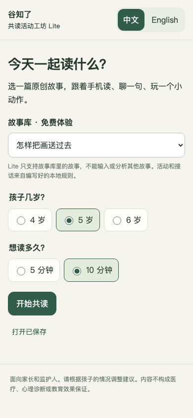
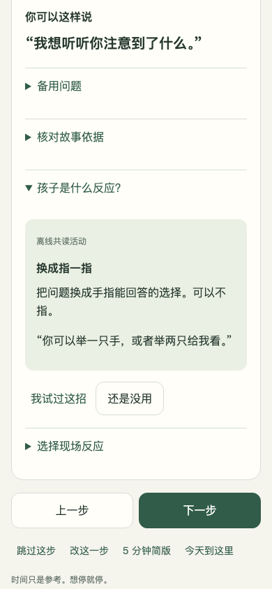

照着说、跟着做
每次打开一个步骤，看故事对应的家长话术。可以返回、跳过或提前结束。
适合想临时读一个故事、少做准备的 4–6 岁孩子家长或监护人。活动由成人引导，孩子可以不回答，也可以随时结束。
每次打开一个步骤，看故事对应的家长话术。可以返回、跳过或提前结束。
选择现场反应，切换到不同的互动方式。连续反馈后可以暂停，无需把问题问完。
单独调整当前步骤，或撤销该调整。可以保存或删除活动方案，也可在支持的环境中打印。
试读选「怎样把画送过去」，进入互动步骤，展开「孩子是什么反应？」。点「说了但没用」，工具建议先指给孩子看。再点「还是没用」，换成家长示范，让孩子只看也可以。继续反馈时可以暂停或结束。


已验证解压后离线打开、操作和存为 PDF。
真机已验证连续反馈、保存后重新打开。PDF 在打印面板未能完成。
直接打开和刷新后的表现尚未验证。可先用本页免费在线试读检查你的设备。
Lite 只支持内置故事。它按年龄和所选反应切换已编写的建议，不分析任意文字。
在线试读需要打开网页。完整版下载并解压后可离线使用，无需账号、AI 会员、API Key 或外部模型调用。
保存在当前浏览器或预览环境。可在保存列表删除，也可清除浏览器站点数据以移除所有本机记录。换设备或清理数据后，原记录不会同步。
先用免费版确认浏览器是否好用。若完整版遇到问题，请注明设备和打开方式，联系 lqingli45@gmail.com。